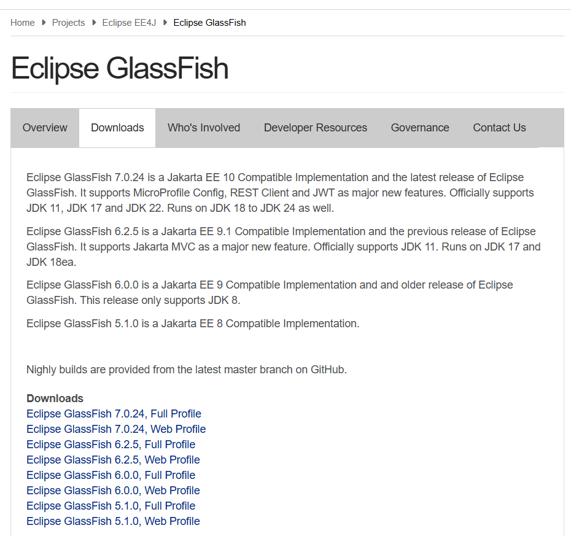
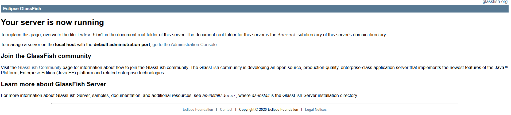
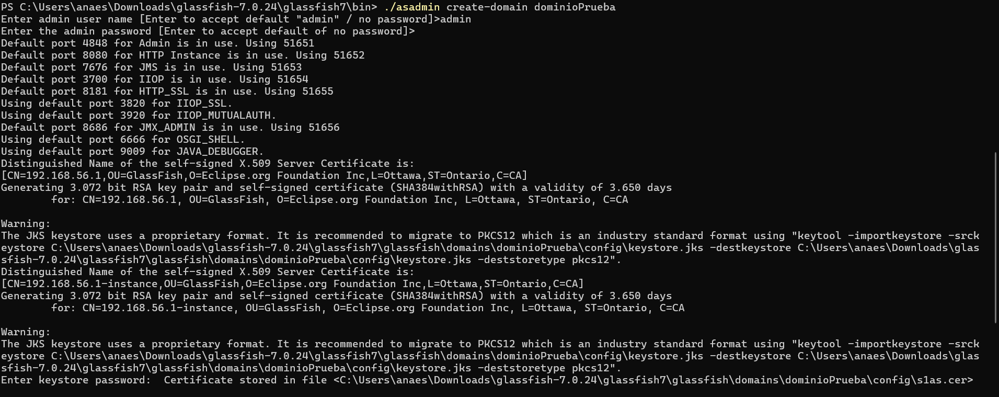

GlassFish Server es un servidor de aplicaciones de código abierto compatible con Java EE y Jakarta
EE.
Proporciona un entorno integral para el desarrollo, ejecución y despliegue de aplicaciones
empresariales
Java, soportando tecnologías como servlets, JSP, EJB, JPA, JMS y Web Services. Es la implementación
de
referencia oficial de Jakarta EE, utilizada para probar y validar nuevas especificaciones antes de
su
publicación oficial. GlassFish es gratuito, multiplataforma, modular, extensible y ofrece una
interfaz de administración web que simplifica la configuración y gestión de aplicaciones.
COMPONENTES
- HK2 Kernel. Responsable de la gestión de los servicios internos del servidor.
- Grizzly. Encargado de manejar conexiones y solicitudes web.
- GlassFish Web Container. Contenedor de Servlets y JSP para ejecutar aplicaciones
web.
- EJB Container. Gestiona los Enterprise JavaBeans y la lógica empresarial.
- JPA Provider. Implementación de JPA para acceso a bases de datos.
- Admin Console. Interfaz web para configuración, despliegue y monitoreo de
aplicaciones.
- asadmin CLI. Línea de comandos para administración avanzada.
VENTAJAS
- Permite despliegues en caliente sin necesidad de reiniciar el servidor.
- Soporta clustering y balanceo de carga.
- Integración con IDEs y seguridad configurable.
- Gestión avanzada de recursos.
- Alta estabilidad y rendimiento en entornos de producción.
Se requiere Java Development Kit (JDK) versión 11 o superior, siendo recomendable JDK 17.
Verifique la versión instalada ejecutando javac -version en la consola.
Variables de entorno configuradas.
Defina correctamente las variables de entorno: JAVA_HOME apuntando al directorio del JDK,
CATALINA_HOME (si aplica) y PATH incluyendo %JAVA_HOME%\bin.
Sistemas Operativos compatibles.
Windows 10, Windows 11, Linux y macOS.
Espacio mínimo en el disco.
Se requieren al menos 300 MB de espacio libre en disco.
RAM mínima.
Se recomienda disponer de 1 GB de RAM, siendo óptimo 2 GB o más para entornos de desarrollo y
producción.
En la página oficial, elija la versión de GlassFish que desea instalar y haga clic sobre ella.

Página de enlaces de descarga
1. Una vez descargado el archivo .zip, descomprímalo en el directorio de instalación deseado. Esto
creará el dominio predeterminado 'domain1' ya configurado.
2. Para iniciar GlassFish, abra la carpeta 'bin', haga clic derecho en 'Abrir en Terminal'
y ejecute:
./asadmin start-domain
Comando para iniciar el dominio
3. Tras unos segundos, el servidor estará en funcionamiento y listo para recibir solicitudes. Acceda
mediante navegador a
http://localhost:8080 para verificar el inicio
correcto.

Pantalla de inicio del servidor
4. Para detener el dominio, ejecute el siguiente comando:
./asadmin stop-domain
¿Cómo se configura GlassFish?
1. Para crear un nuevo dominio, acceda a la terminal y ejecute:
./asadmin create-domain nombre_del_dominio_nuevo
2. El sistema solicitará usuario y contraseña para completar la configuración del dominio.

Ejemplo de dominio recién creado⚠️Nota: Detenga el dominio antes de realizar cualquier modificación y reinícielo después de aplicar
cambios.
3. Para administrar usuarios y roles, edite el archivo keyfile ubicado en domains >
nombre_dominio > config, con estructura similar:
4. Para modificar los puertos HTTP o HTTPS, edite el archivo 'domain.xml' ubicado en la carpeta
config. Dentro de este archivo, la sección '<network-listener>' define
los conectores de red:
Actualice los valores de los puertos según sea necesario.
¿Cómo iniciamos la base de datos?
1. Con el dominio en ejecución, inicie la base de datos ejecutando:
./asadmin start-database --dbhome ruta-directorio
2. Para detener el servidor de base de datos, utilice:
./asadmin stop-database
Panel de administración de GlassFish
3. GlassFish proporciona una consola de administración accesible desde http://localhost:4848, que ofrece un panel gráfico para
supervisión y configuración.
¿Cómo desplegamos una aplicación web en GlassFish?
1. Para desplegar una aplicación, copie el archivo .war o .ear en la carpeta domains >
nombre_dominio > autodeploy.
2. También puede desplegarse mediante consola ejecutando:
./asadmin deploy /ruta_del_archivo/archivo.war
3. Verifique el correcto funcionamiento accediendo en un navegador a
http://localhost:8080/nombre_archivo.